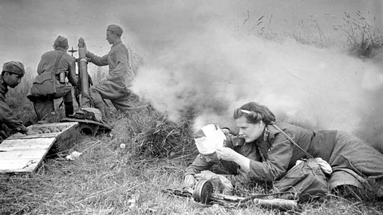
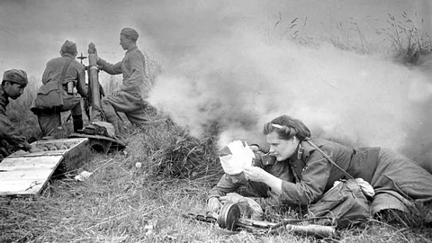

Великая Отечественная Война
Первоначально немцы продвигались очень быстро, захватывая города и населенные пункты. Особенно тяжелыми были первые месяцы войны, когда погибали тысячи советских солдат и мирных жителей. Однако дух сопротивления не угасал. Защита Москвы в 1941 году стала символом мужества и патриотизма. Осенью того же года наши войска смогли остановить врага, и это дало возможность начать контрнаступление.
В 1943 году произошли ключевые сражения, например, Сталинградская и Курская битвы, которые стали поворотными моментами в войне. Потери на обеих сторонах были огромны, но благодаря стойкости и самоотверженности советских солдат, началось освобождение оккупированных территорий.
9 мая 1945 года Германия подписала акт капитуляции, что ознаменовало окончание войны. Этот день стал символом победы и напоминанием о том, как важен мир для будущих поколений.
Великая Отечественная война унесла жизни миллионов людей, и важно помнить о тех, кто сражался за нашу свободу.
*Для просмотра других изображений в галерее, используйте стрелки навигации
 

Стенд с материалами о Героях-земляках, детях войны из числа ветеранов-педагогов нашей школы
Назаров Пётр Иванович
Ветеран Великой Отечественной войны, проживал в микрорайоне, закрепленный за нашей школой, был частым гостем праздничных мероприятий. В 1942 году он был призван в армию. Служил в 785 артиллерийском полку командиром отделения пулемётного расчёта. Принимал участие в героических боях за оборону Ленинграда. Награждён медалями «За победу над Германией», «За отвагу», «За боевые заслуги», знаком «Отличный пулемётчик» и юбилейными медалями.
Ромашенко Николай Артемьевич
В 1943 году был призван в армию. Служил на Дальнем Востоке, был миномётчиком. Воевал в частях I Белорусского фронта. За мужество и стойкость награждён «Орденом Великой Отечественной войны», медалями «За отвагу», «За боевые заслуги», «За освобождение Варшавы», «За взятие Берлина», «За победу над Германией».
80 Победа! Официальный сайт празднования 80-ой годовщины Победы в Великой Отечественной войне. Актуальные новости, исторические факты, архивные фото и видео, письма с фронта.
*Воспользуйтесь ссылкой "К содержанию" для быстрого доступа к оглавлению
Чеченская война
Чеченская война Чеченская война — это один из самых трагичных и сложных периодов в новейшей истории России. Этот конфликт разделяется на две основные фазы: первая чеченская война (1994-1996 годы) и вторая чеченская война (1999-2009 годы). В начале 90-х годов, после распада Советского Союза, Чечня стремилась к независимости. Чеченцы желали сохранить свою культуру и идентичность. Однако российское руководство не могло смириться с возможной потерей территории, что привело к вооруженному конфликту. Первая чеченская война началась в декабре 1994 года, когда российские войска вошли в Чечню для подавления стремления к независимости. Бои были жестокими, и многие мирные жители стали жертвами службы. Грозный, столица Чечни, превратился в руины, а тысячи людей стали беженцами. В 1996 году были подписаны Хасавюртовские соглашения, которые формально завершили войну. Однако мир не был достигнут, и проблемы в регионе оставались. Во второй чеченской войне, начавшейся в 1999 году, российские войска снова вернулись в Чечню. Эта война длилась дольше и была ещё более разрушительной. Многие люди погибли, и последствия конфликта ощущаются до сих пор. Сегодня Чечня постепенно восстанавливается, но шрамы войны остаются в памяти людей. Эти события важно помнить, чтобы учиться на ошибках прошлого и стремиться к миру и взаимопониманию.
*Для просмотра других изображений в галерее, используйте стрелки навигации


Прокопьев Кирилл Анатольевич.
Прокопьев Кирилл Анатольевич, выпускник 2001 года Был призван в ряды Вооруженных Сил в 2002 году. Первоначально служил в селе Щукина Пушкинского района Московской области. С марта по октябрь 2004 года служил во внутренних войсках (21 бригада оперативного назначения) в селе Курчалой Чеченской Республики. Сопровождали колонны, прикрывали сотрудников ОМОНа.

Каранаев Вячеслав Михайлович.
.JPG)